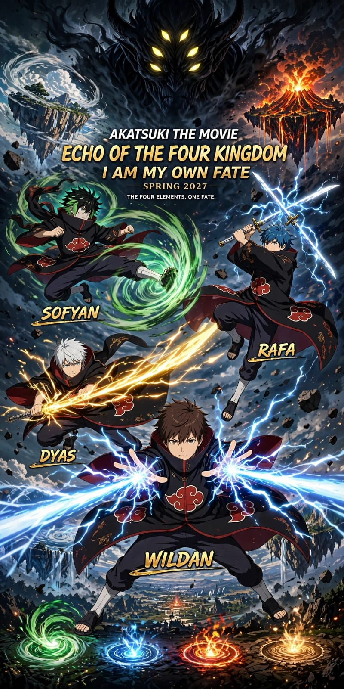

🔥 Kazangu
Kerajaan Api — tempat jatuhnya kerajaan pertama dan awal kebangkitan cahaya Dyas.
Bumi memiliki empat jantung. Empat kerajaan menjaga empat inti elemental. Ketika Nezarkos, The Star Devourer datang untuk memakan semuanya, empat penjaga harus bangkit sebelum dunia kehilangan fajar terakhirnya.
Bumi punya 4 jantung, 4 kerajaan. Kazangu Kerajaan Api, Naeris Kerajaan Air, Ghael Kerajaan Tanah, Vayra Kerajaan Angin. Di setiap kerajaan ada Inti Elemental. Nezarkos, The Star Devourer, alien 4 meter dengan armor meteor hidup dan 6 mata datang untuk memakan 4 inti itu agar berevolusi jadi dewa. Dia bukan meteor, dia adalah lubang gravitasi yang berjalan.
Kerajaan Api — tempat jatuhnya kerajaan pertama dan awal kebangkitan cahaya Dyas.
Kerajaan Air — kota di dalam gelembung air raksasa di dasar laut.
Kerajaan Tanah — benteng besi yang dipertahankan Rafa seorang diri.
Kerajaan Angin — kampung halaman Sofyan dan medan pertempuran terakhir.
Pedang Cahaya & Manipulasi Cahaya. Kebangkitan: Kazangu Light Seraph.
Penguasa badai. Kebangkitan: Vayra Storm Sovereign.
Manipulasi listrik murni. Kebangkitan: Naeris Lightning Monarch.
Pedang petir. Kebangkitan: Ghael Thunder God.

Empat penjaga berdiri di tengah kehancuran empat kerajaan. Sofyan membawa badai, Rafa menjadi pedang petir, Dyas membawa cahaya, dan Wildan mengendalikan listrik.
Di atas mereka, ancaman terbesar menunggu: Nezarkos, The Star Devourer. Poster ini menjadi visual utama sebelum kisah film memasuki lima pertarungan besarnya.
Kazangu diserang pertama. 10.000 prajurit api membakar langit, tapi api mereka membeku di depan Nezarkos karena gravitasi. Raja Kazangu, ayah angkat Dyas, maju dengan pedang apinya. Nezarkos melipat gravitasi, raja hancur jadi bola besi. Inti Api keserap, dada Nezarkos menyala merah.
Dyas yang melihat siaran itu dari Vayra diam-diam kembali ke Kazangu yang sudah jadi kawah kaca. Di sana Nezarkos belum pergi, dia sedang mencerna Inti Api. Dyas mencabut pedang warisan ayahnya, tapi pedang api itu meleleh di dekat Nezarkos. Dyas marah, dia patahkan pedang api itu dan dari patahannya keluar cahaya putih murni.
Dyas tebas, cahaya itu tidak bisa ditahan gravitasi, untuk pertama kalinya armor Nezarkos terbelah dan mengeluarkan darah hitam bercahaya. Nezarkos kaget, dia pukul Dyas dengan ledakan supernova mini dari Inti Api, Dyas terpental sampai keluar atmosfer Kazangu, pedang cahayanya retak tapi masih menyala. Nezarkos pergi, Dyas selamat karena cahayanya melindunginya. Dia sadar, cahaya adalah satu-satunya yang tidak bisa dimakan gravitasi.
Nezarkos turun ke Naeris, kota di dalam gelembung air raksasa di dasar laut. Wildan sudah menunggu di dalam gelembung. Dia tidak pakai air, dia pakai listrik. Dia menempelkan kedua tangannya ke dinding gelembung dan melepaskan Naeris: Thunder Dome — 100 Juta Volt. Seluruh gelembung kota berubah menjadi sangkar listrik raksasa, petir menyambar-nyambar di dalam air. Nezarkos masuk, listrik itu tidak melukainya, tapi memperlambat gravitasinya karena listrik mengganggu medan magnetnya.
Di atas permukaan laut, Sofyan melayang. Dia melihat sahabatnya berjuang di bawah. Dia mengangkat kedua tangannya dan menciptakan badai, Vayra: Eye of The Storm. Dia tidak menyerang Nezarkos langsung, dia mengosongkan udara di atas laut Naeris, menciptakan vakum raksasa. Air laut naik ke atas karena vakum itu, membentuk tornado air setinggi 5 kilometer yang menghubungkan langit dan dasar laut.
Wildan melihat itu, dia mengerti. Dia mengalirkan semua listriknya ke tornado air yang dibuat Sofyan.
Tombak itu menembus gelembung Naeris dan menghantam dada Nezarkos, menembus Inti Api dan Inti Air yang baru dia ambil, membuat dua inti itu korslet. Nezarkos berteriak, untuk pertama kalinya dia merasakan listrik masuk ke jantungnya. Dia marah, dia meledakkan dua inti itu bersamaan, ledakan uap dan api yang menguapkan setengah Naeris. Sofyan menarik Wildan yang kehabisan listrik dengan anginnya dan kabur. Inti Air lepas dan masuk ke dada Nezarkos, sekarang dia punya dua inti tapi retak karena korslet listrik Wildan.
Ghael, benteng besi. Semua prajurit kabur. Rafa sendirian di gerbang dengan pedang katana hitamnya yang belum menyala.
Nezarkos mengirim 10.000 golem gravitasi. Rafa mencabut pedangnya pelan. Pedangnya tidak menyala api, tapi berderak, crack. Listrik statis. Rafa adalah pedang petir, dia tidak memanipulasi listrik seperti Wildan, dia ADALAH petir yang berbentuk pedang.
Dia terus bergerak, Second Form — Thunder Chain, pedangnya dilempar dan memantul di antara golem seperti petir yang memantul, kembali ke tangannya. Selama 7 hari montase, Rafa tidak tidur, dia menjadi kilat yang menjaga Ghael. Gunung-gunung di sekitarnya hangus hitam karena sambaran petirnya.
Hari ke-7, Nezarkos datang sendiri. Rafa sudah kelelahan, pedang petirnya redup. Nezarkos mengangkat gunung besi Ghael dengan gravitasi dan menjatuhkannya ke Rafa. Rafa melihat gunung itu jatuh, dia tancapkan pedangnya ke tanah, dan berteriak Final Form: Heavenly Thunder Pillar. Dia memanggil petir dari langit Vayra yang ada di atas Ghael, petir ungu raksasa menyambar pedangnya dan naik ke atas menghancurkan gunung yang jatuh itu menjadi debu besi.
Ledakan petir dan gravitasi bertabrakan, seluruh Ghael meledak cahaya putih. Ketika cahaya hilang, Rafa berlutut, pedangnya patah setengah, tubuhnya hangus, tapi dia masih berdiri. Nezarkos berjalan melewatinya, mengambil Inti Tanah di bawah kakinya. Rafa mencoba tebas terakhir, Nezarkos pukul dia dengan gravitasi sampai terpental jauh. Nezarkos sekarang punya 3 inti, tapi tubuhnya bocor listrik karena pertarungan dengan Rafa dan Wildan, armornya retak mengeluarkan petir liar.
Dyas tidak ikut ke Ghael, dia terbang ke orbit, ke kapal induk Nezarkos sebesar bulan yang terbuat dari tulang bintang. Kapal itu tidak punya cahaya, hanya gelap dan gravitasi.
Di dalam kapal, dijaga Star Hive, anak-anak Nezarkos. Dyas masuk dengan pedang cahayanya yang sudah diperbaiki. Di tempat gelap, pedang cahaya Dyas adalah satu-satunya cahaya. Setiap tebasan Dyas bukan memotong, tapi membelah kegelapan itu sendiri.
Di inti kapal, Dyas menemukan jantung kapal adalah Inti Api yang asli yang belum dicerna. Dia menusukkan pedang cahayanya ke jantung itu, cahaya Dyas masuk dan menginfeksi Inti Api itu dengan cahaya murni. Dia menanam bom cahaya, Nova Core: Daylight Bomb, dan kabur.
Kapal induk meledak setengah, ledakan cahaya itu terlihat dari bumi seperti matahari kedua terbit di malam hari. Ledakan itu merambat lewat koneksi gravitasi dan melukai Nezarkos yang ada di bumi, membuat 3 inti di dadanya semakin retak dan tidak stabil. Dyas jatuh kembali ke bumi seperti komet cahaya.
Final. Vayra, kampung halaman Sofyan. Nezarkos dengan 3 inti retak dan bocor petir dan cahaya menancapkan 3 inti itu ke pulau utama Vayra dan memutar gravitasi. Pulau-pulau Vayra yang melayang ribuan tahun mulai jatuh. Langit terbalik, laut di atas kepala.
Sofyan, Wildan, Rafa yang diseret Dyas, dan Dyas berkumpul di pulau terakhir. Nezarkos pakai Trinity Gravity Devour, menarik elemen dari tubuh mereka. Sofyan sesak karena angin ditarik dari paru-paru, Wildan kejang karena listriknya ditarik, Rafa pedang petirnya padam karena gravitasi, Dyas cahayanya redup.
Pulau terakhir jatuh. Sofyan lihat rumah ibunya dengan lampu kecil masih nyala. Dia rindu, bukan marah. Dia lepas semua penahan anginnya dan berteriak. Inti Angin yang bersembunyi ribuan tahun keluar dan masuk ke dada Sofyan. Cahaya itu picu awakening semua.
Mereka serang. Rafa jadi petir, dia berlari mengelilingi Nezarkos 100 kali dalam 1 detik, Thunder God: Infinite Lightning Slash, setiap tebasan meninggalkan luka petir yang tidak bisa sembuh karena listrik. Wildan mengangkat semua air laut yang tumpah di langit dan mengubahnya jadi konduktor, Lightning Monarch: World Wide Thunderstorm, seluruh langit Vayra jadi badai petir, ribuan petir menyambar Nezarkos bersamaan, membuat 3 inti di dadanya korslet total.
Sofyan terbang tinggi dan menciptakan Storm Sovereign: Vacuum Annihilation, dia hapus udara di sekitar Nezarkos, membuat gravitasi Nezarkos tidak bisa menyebar karena tidak ada medium. Dyas tebas dengan pedang cahaya raksasanya, Seraph: Photon Judgement, membelah armor hidup Nezarkos jadi dua.
Nezarkos sekarat tapi masih hidup, dia gabung 3 inti retak jadi bola hitam seukuran pulau, Trinity Annihilation Star, untuk hapus Vayra.
Dyas tahu ini akhir. Dia terbang paling tinggi di atas bola itu, buka dadanya, 6 sayap cahayanya melebar dan berteriak “KASIH GUE SEMUANYA!”
Sofyan, Rafa, Wildan mengerti, mereka salurkan semua energi awakening. Petir, Listrik, Angin masuk ke matahari di dada Dyas. Wujud dewa mereka hilang, kembali jadi manusia pingsan, jatuh ditahan angin terakhir Sofyan. Matahari di dada Dyas membesar sebesar bulan, warnanya putih, emas, dengan petir dan angin berputar di dalamnya.
Dari dada Dyas melesat pilar cahaya kolosal selebar Kerajaan Vayra, bukan laser tipis, tapi pilar cahaya murni yang di dalamnya ada petir Rafa, listrik Wildan, dan angin Sofyan yang berputar. Pilar itu berwarna putih emas dengan petir hijau dan biru di sisinya. Sebelum mengenai Nezarkos, Sofyan setengah sadar dorong Inti Angin ke dalam pilar itu.
Nezarkos angkat bola kehancuran dan tameng gravitasi 3 inti. Pilar cahaya tabrak. Tidak ada ledakan, hanya senyap keras. Tameng gravitasi retak, 3 inti pecah, Api padam, Air menguap, Tanah jadi debu. Armor hidup terkelupas, 6 mata pecah, dia berteriak “PANAS” bahasa manusia. Cahaya itu dorong dia naik dari langit Vayra, tembus atmosfer, sampai luar angkasa, sampai dia titik hitam kecil di dalam matahari buatan itu, lalu hilang jadi debu cahaya.
Cahaya itu menyilaukan bumi 10 detik. Ketika hilang, langit Vayra biru kembali, pulau-pulau yang jatuh kembali melayang pelan.
Sebulan kemudian. 4 kerajaan bangun bersama. Di tengah Vayra dibangun patung 4 orang dengan jubah Akatsuki robek, Sofyan di depan dengan pusaran angin di tangan, Dyas di samping dengan pedang cahaya berasap, Rafa dengan pedang petir retak, Wildan dengan listrik mengalir di kaki.